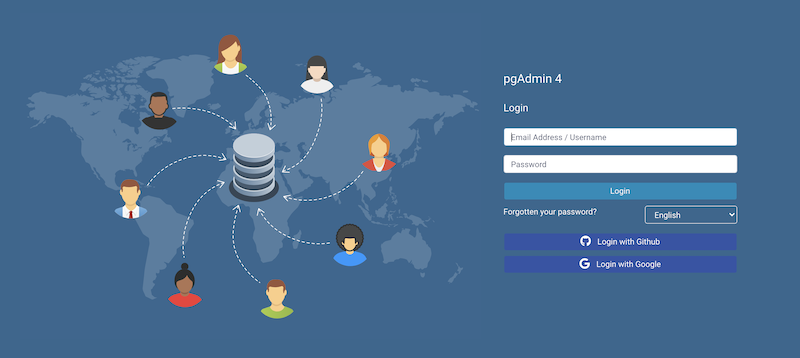

Enabling OAUTH2 Authentication¶
To enable OAUTH2 authentication for pgAdmin, you must configure the OAUTH2 settings in the config_local.py or config_system.py file (see the config.py documentation) on the system where pgAdmin is installed in Server mode. You can copy these settings from config.py file and modify the values for the following parameters:
Parameter |
Description |
|---|---|
AUTHENTICATION_SOURCES |
The default value for this parameter is internal. To enable OAUTH2 authentication, you must include oauth2 in the list of values for this parameter. you can modify the value as follows:
|
OAUTH2_NAME |
The name of the Oauth2 provider, ex: Google, Github |
OAUTH2_DISPLAY_NAME |
Oauth2 display name in pgAdmin |
OAUTH2_CLIENT_ID |
Oauth2 Client ID |
OAUTH2_CLIENT_SECRET |
Oauth2 Client Secret |
OAUTH2_TOKEN_URL |
Oauth2 Access Token endpoint |
OAUTH2_AUTHORIZATION_URL |
Endpoint for user authorization |
OAUTH2_SERVER_METADATA_URL |
Server metadata url for your OAuth2 provider |
OAUTH2_API_BASE_URL |
Oauth2 base URL endpoint to make requests simple, ex: https://api.github.com/ |
OAUTH2_USERINFO_ENDPOINT |
User Endpoint, ex: user (for github) and useinfo (for google) |
OAUTH2_SCOPE |
Oauth scope, ex: ‘openid email profile’. Note that an ‘email’ claim is required in the resulting profile. |
OAUTH2_ICON |
The Font-awesome icon to be placed on the oauth2 button, ex: fa-github |
OAUTH2_BUTTON_COLOR |
Oauth2 button color |
OAUTH2_USERNAME_CLAIM |
|
OAUTH2_AUTO_CREATE_USER |
|
Redirect URL¶
The redirect url to configure Oauth2 server is http://<pgAdmin Server URL>/oauth2/authorize
Master Password¶
In the multi user mode, pgAdmin uses user’s login password to encrypt/decrypt the PostgreSQL server password. In the Oauth2 authentication, the pgAdmin does not store the user’s password, so we need an encryption key to store the PostgreSQL server password. To accomplish this, set the configuration parameter MASTER_PASSWORD to True, so upon setting the master password, it will be used as an encryption key while storing the password. If it is False, the server password can not be stored.
Login Page¶
After configuration, on restart, you can see the login page with the Oauth2 login button(s).
